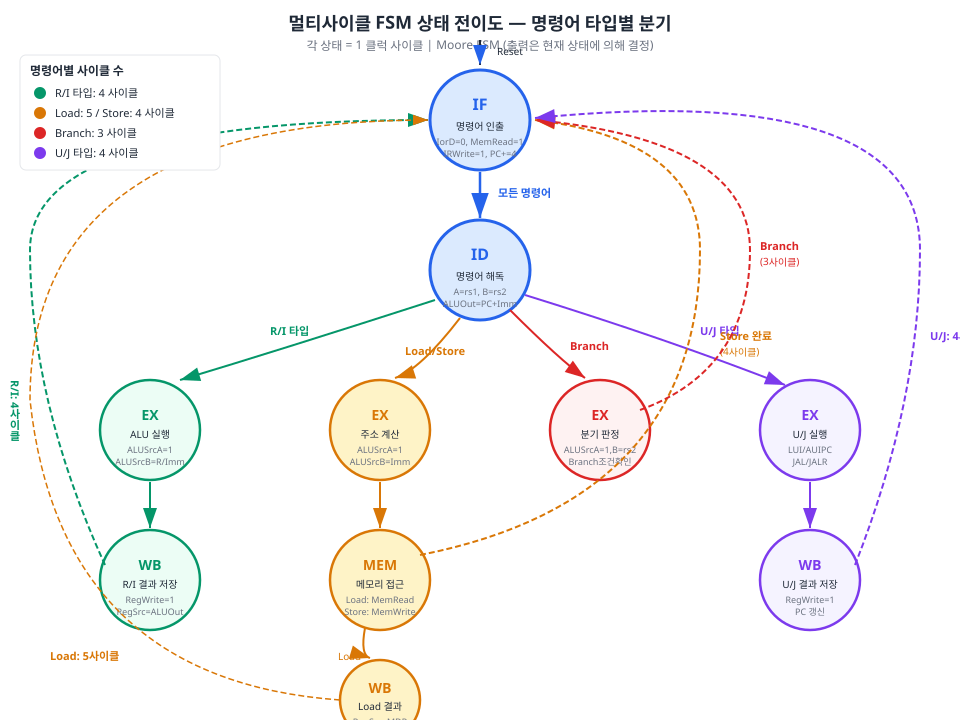
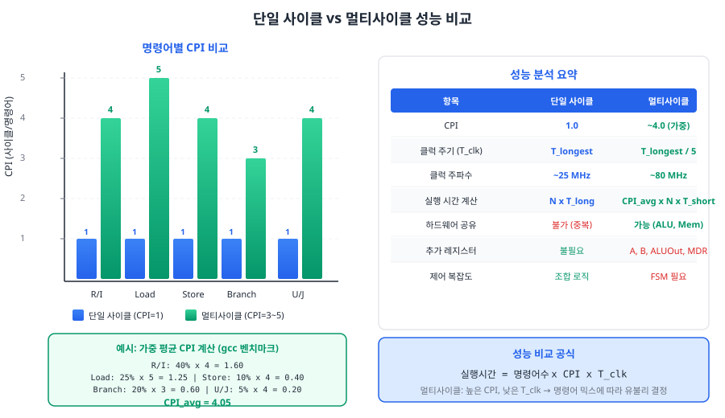

멀티사이클 프로세서의 두뇌인 유한 상태 기계(FSM) 제어 유닛을 설계한다. Chapter 07에서 구축한 데이터패스 위에 FSM을 올려 완전한 멀티사이클 CPU를 완성하고, 단일 사이클 대비 성능 트레이드오프를 정량적으로 분석한다.
8.1 유한 상태 기계(FSM) 제어 원리
Chapter 06에서 설계한 단일 사이클 제어 유닛은 순수한 조합 논리(combinational logic)로 구현되었다. 명령어가 입력되면 한 클럭 사이클 안에 모든 제어 신호가 동시에 결정되고, 데이터패스의 모든 단계가 한꺼번에 동작한다. 이 방식은 개념적으로 단순하지만, Chapter 07에서 분석한 대로 가장 느린 명령어(Load)에 맞추어 클럭 주기를 설정해야 하므로 빠른 명령어(Branch 등)도 불필요하게 긴 시간을 소모하는 비효율이 발생한다.
멀티사이클 프로세서는 하나의 명령어 실행을 여러 클럭 사이클로 나눈다. 각 사이클에서는 데이터패스의 일부 모듈만 활성화하고, 나머지는 비활성 상태로 둔다. 이렇게 되면 "지금 어떤 단계를 수행 중인가?"를 추적하는 메커니즘이 필요하다. 바로 이 역할을 수행하는 것이 유한 상태 기계(有限狀態機械, Finite State Machine, FSM)이다.
FSM의 기본 구성 요소
FSM은 다음 네 가지 요소로 정의된다.
요소
설명
멀티사이클 프로세서에서의 의미
상태 집합(States)
유한한 개수의 상태
IF, ID, EX, MEM, WB 등의 실행 단계
입력(Inputs)
상태 전이를 결정하는 신호
opcode, funct3 등 명령어 필드
출력(Outputs)
데이터패스를 제어하는 신호
PCWrite, IRWrite, MemRead, RegWrite 등
전이 함수(Transition Function)
현재 상태와 입력에 따른 다음 상태
ID 상태에서 opcode에 따라 EX 변형으로 분기
비유: 교통 신호등 시스템
FSM은 교통 신호등과 유사하다. 신호등은 녹색→황색→적색→녹색 순으로 순환하며, 각 상태(색상)에서 차량과 보행자에게 서로 다른 "제어 신호"(정지, 주의, 진행)를 보낸다. 센서(입력)가 보행자 버튼 눌림을 감지하면 상태 전이 순서가 변경될 수 있다. 멀티사이클 프로세서의 FSM도 마찬가지로, 현재 상태(실행 단계)에 따라 데이터패스에 서로 다른 제어 신호를 출력하고, 명령어의 종류(입력)에 따라 다음 상태로의 전이 경로가 달라진다.
Moore FSM vs Mealy FSM
FSM은 출력 결정 방식에 따라 두 가지로 분류된다.
Moore FSM에서는 출력이 오직 현재 상태에 의해서만 결정된다. 수학적으로 표현하면 출력 = f(현재_상태)이다. 상태가 바뀌지 않는 한 출력은 변하지 않으므로, 출력이 안정적이고 글리치(glitch) 발생 가능성이 낮다. 상태 전이도(state transition diagram)에서 출력은 상태 원(circle) 내부에 표기한다.
Mealy FSM에서는 출력이 현재 상태와 입력의 조합으로 결정된다. 즉 출력 = f(현재_상태, 입력)이다. 같은 상태에 있더라도 입력이 바뀌면 출력이 즉시 변한다. 이 특성 덕분에 Moore FSM보다 적은 수의 상태로 동일한 동작을 구현할 수 있지만, 입력 변화가 출력에 직접 전파되므로 조합 논리 경로(combinational path)가 길어질 수 있고 글리치에 취약하다. 상태 전이도에서 출력은 전이 화살표 위에 "입력/출력" 형태로 표기한다.
그림 8.1: Moore FSM과 Mealy FSM의 구조 비교. Moore FSM은 상태 내부에 출력을 표기하고, Mealy FSM은 전이 화살표에 입력/출력을 표기한다.
프로세서 제어에 Moore FSM을 선택하는 이유
멀티사이클 프로세서의 제어 유닛 설계에서는 일반적으로 Moore FSM을 채택한다. 그 이유는 다음과 같다.
출력 안정성: 각 클럭 사이클 동안 제어 신호가 안정적이어야 데이터패스의 레지스터, 멀티플렉서, 메모리가 올바르게 동작한다. Moore FSM은 상태가 고정되어 있는 한 출력이 변하지 않으므로 이 요구사항을 자연스럽게 충족한다.
타이밍 분석 용이: 출력이 상태 레지스터의 출력에서 직접 도출되므로, 조합 논리 지연이 짧고 임계 경로(critical path) 분석이 단순하다.
디버깅 편의: 현재 상태만 관찰하면 모든 제어 신호를 알 수 있으므로, Verdi나 Vivado Simulator의 파형 분석에서 상태만 추적하면 디버깅이 용이하다.
명령어별 사이클 수
멀티사이클 프로세서에서 각 명령어 타입이 소요하는 사이클 수는 명령어가 거치는 상태(단계)의 수에 의해 결정된다. 이 값이 곧 해당 명령어의 CPI(Cycles Per Instruction, 명령어당 사이클 수)이다.
명령어 타입
경로 (상태 시퀀스)
CPI
근거
R 타입 (ADD, SUB 등)
IF → ID → EX → WB
4
ALU 연산 후 즉시 레지스터 기록
I 타입 (ADDI 등)
IF → ID → EX → WB
4
R 타입과 동일 경로 (B 입력만 즉치수로 변경)
Load (LW 등)
IF → ID → EX → MEM → WB
5
주소 계산 후 메모리 접근이 추가로 필요
Store (SW 등)
IF → ID → EX → MEM
4
메모리 기록 후 WB 불필요 (레지스터 변경 없음)
Branch (BEQ 등)
IF → ID → EX
3
조건 판정 후 PC 갱신만 수행
U 타입 (LUI, AUIPC)
IF → ID → EX → WB
4
즉치수 처리 후 레지스터 기록
J 타입 (JAL, JALR)
IF → ID → EX → WB
4
점프 목표 계산 + 복귀 주소 저장
핵심 연결: FSM 상태 = 파이프라인 스테이지
이 절을 마무리하면서 한 가지 결정적인 통찰을 강조한다. 멀티사이클 FSM의 각 상태는 파이프라인 프로세서의 각 스테이지와 1:1로 대응한다. IF 상태는 파이프라인의 IF 스테이지에, ID 상태는 ID 스테이지에, EX 상태는 EX 스테이지에 대응한다. 멀티사이클에서는 이 상태들을 순차적으로 하나씩 실행하지만, 파이프라인에서는 이 상태들을 동시에 병렬 실행한다. 이 관점에서 멀티사이클 프로세서는 파이프라인 프로세서의 "직렬 버전"이라고 할 수 있다. Chapter 09에서 이 연결을 공식적으로 확장한다.
8.2 5단계 FSM 상태 설계: IF → ID → EX → MEM → WB
8.1절에서 FSM의 기본 원리를 이해했으니, 이제 멀티사이클 RV32I 프로세서를 위한 구체적인 상태 전이도를 설계한다. 각 상태에서 어떤 제어 신호가 활성화되어야 하는지를 명확히 정의하는 것이 이 절의 핵심 과제이다.
상태 전이도 전체 구조
그림 8.2는 멀티사이클 프로세서의 완전한 상태 전이도이다. 시작점은 항상 IF 상태이며, 리셋 시에도 IF로 초기화된다. IF에서 ID로의 전이는 모든 명령어에 공통이다. ID 상태에서 opcode를 해독한 결과에 따라 네 가지 EX 변형 상태 중 하나로 분기한다. 이후 각 명령어 타입의 특성에 따라 MEM, WB 상태를 선택적으로 거친 뒤 다시 IF로 복귀한다.

그림 8.2: 멀티사이클 RV32I 프로세서의 FSM 상태 전이도. ID 상태에서 명령어 타입에 따라 네 가지 EX 변형으로 분기한다. 점선 화살표는 IF로의 복귀를 나타낸다.
IF (Instruction Fetch) 상태
IF 상태에서는 프로그램 카운터(PC)가 가리키는 메모리 주소에서 명령어를 읽어 명령어 레지스터(IR, Instruction Register)에 저장한다. 동시에 PC를 4만큼 증가시켜 다음 명령어 주소를 준비한다.
제어 신호
값
근거
MemRead
1
메모리에서 명령어 읽기
IorD
0
주소 = PC (명령어 주소)
IRWrite
1
읽은 명령어를 IR에 저장
ALUSrcA
PC
ALU A 입력 = PC
ALUSrcB
4
ALU B 입력 = 상수 4
ALUOp
ADD
PC + 4 계산
PCWrite
1
PC ← PC + 4
PCSrc
ALU결과
PC에 ALU 출력(PC+4) 기록
IF 상태에서 ALU를 PC+4 계산에 사용하는 이유는 멀티사이클의 자원 공유 원칙 때문이다. 단일 사이클에서는 PC+4를 위한 별도 가산기가 있었지만, 멀티사이클에서는 ALU 하나로 모든 연산을 시분할(time-sharing)한다. IF 단계에서 ALU가 PC+4를 계산하고, EX 단계에서는 동일한 ALU가 명령어의 연산(덧셈, 비교 등)을 수행한다.
ID (Instruction Decode) 상태
ID 상태에서는 IR에 저장된 명령어를 해독한다. 레지스터 파일에서 rs1과 rs2를 읽어 중간 레지스터 A, B에 저장한다. 또한 분기/점프 목표 주소를 미리(speculatively) 계산하여 ALUOut 레지스터에 저장해 둔다. 이 "투기적 계산"은 분기 명령어일 경우 EX 상태에서 조건 판정 후 즉시 사용할 수 있게 해 준다.
제어 신호
값
근거
ALUSrcA
PC
분기 목표 = PC + Imm (투기적 계산)
ALUSrcB
Imm
즉치수 (부호 확장 완료)
ALUOp
ADD
PC + Imm 계산
ID 상태의 특별한 점은 모든 명령어 타입에 공통이라는 것이다. 아직 명령어 타입을 구분하지 않고, 레지스터 읽기와 즉치수 생성이라는 공통 작업만 수행한다. 이것은 레지스터 파일의 읽기 포트가 opcode와 무관하게 항상 rs1, rs2 필드를 인덱스로 사용하기 때문에 가능하다. R 타입이 아닌 명령어에서 B 레지스터의 값은 사용되지 않을 뿐, 읽기 자체는 문제를 일으키지 않는다.
EX (Execute) 상태 — 네 가지 변형
ID 상태에서 해독된 opcode에 따라 네 가지 EX 변형 중 하나로 전이한다. 이 분기가 멀티사이클 FSM의 핵심적인 "상태 경로 분기"이다.
EX_R: R/I 타입 ALU 실행
R 타입(ADD, SUB, AND 등)과 I 타입(ADDI, ANDI 등) 명령어는 ALU 연산을 수행한다. 두 타입의 차이는 ALU B 입력이 레지스터(R 타입)인지 즉치수(I 타입)인지 뿐이다.
제어 신호
R 타입
I 타입
공통 근거
ALUSrcA
rs1 (A)
rs1 (A)
첫 번째 피연산자는 항상 rs1
ALUSrcB
rs2 (B)
Imm
R 타입은 레지스터, I 타입은 즉치수
ALUOp
funct3/funct7에 따라 결정
Ch06 디코더 로직 재사용
EX_M: Load/Store 주소 계산
Load와 Store 명령어는 메모리 접근 주소를 계산한다. 주소 = rs1(베이스) + Imm(오프셋)이다.
제어 신호
값
근거
ALUSrcA
rs1 (A)
베이스 주소
ALUSrcB
Imm
오프셋
ALUOp
ADD
유효 주소 = base + offset
EX_B: Branch 조건 판정
Branch 명령어는 rs1과 rs2를 비교하여 분기 조건의 성립 여부를 판정한다. 조건이 성립하면 PC를 ID 상태에서 미리 계산해 둔 ALUOut(PC + Imm)으로 갱신한다.
제어 신호
값
근거
ALUSrcA
rs1 (A)
비교 대상 1
ALUSrcB
rs2 (B)
비교 대상 2
ALUOp
SUB
뺄셈으로 비교 (Zero 플래그 활용)
PCWrite
분기 성립 시 1
조건 성립 시에만 PC 갱신
PCSrc
ALUOut
ID에서 계산한 PC+Imm 사용
Branch 명령어의 CPI가 3으로 가장 짧은 이유는 여기에 있다. 조건 판정 후 즉시 IF로 복귀하며, MEM이나 WB 단계를 거치지 않는다.
EX_U: U/J 타입 처리
LUI, AUIPC, JAL, JALR은 각각 고유한 동작을 수행하지만, 모두 한 사이클의 EX 처리로 충분하다.
명령어
ALUSrcA
ALUSrcB
ALUOp
추가 동작
LUI
0
Imm
ADD
rd = 0 + Imm(상위 20비트)
AUIPC
PC
Imm
ADD
rd = PC + Imm(상위 20비트)
JAL
PC
4
ADD
rd = PC+4, PC ← ALUOut(ID 계산)
JALR
rs1(A)
Imm
ADD
rd = PC+4, PC ← ALU 결과(rs1+Imm)
MEM (Memory Access) 상태
MEM 상태는 Load와 Store 명령어만 진입한다. EX_M에서 계산한 ALUOut을 메모리 주소로 사용한다.
제어 신호
Load
Store
IorD
1 (데이터 주소)
1 (데이터 주소)
MemRead
1
0
MemWrite
0
1
Store 명령어는 MEM 상태에서 메모리 쓰기를 완료한 후 바로 IF로 복귀한다(CPI=4). 레지스터에 기록할 값이 없으므로 WB 단계가 불필요하다. Load 명령어는 메모리에서 읽은 데이터를 MDR(Memory Data Register)에 저장한 후 WB_M 상태로 전이한다.
WB (Write Back) 상태 — 세 가지 변형
WB 상태는 레지스터 파일에 결과를 기록하는 최종 단계이다. 기록할 데이터 소스에 따라 세 가지 변형이 있다.
WB 변형
데이터 소스
대상 명령어
RegSrc
WB_R
ALUOut (ALU 결과)
R/I 타입
00
WB_M
MDR (메모리 데이터)
Load
01
WB_U
ALUOut 또는 PC
U/J 타입
00 / 10
모든 WB 변형 상태에서는 RegWrite = 1로 설정하고, RegSrc로 기록할 데이터를 선택한다. WB 완료 후에는 항상 IF로 복귀하여 다음 명령어를 인출한다.
8.3 FSM 제어 유닛 SystemVerilog 구현
8.2절에서 설계한 상태 전이도를 SystemVerilog 코드로 변환한다. FSM의 하드웨어 구현에는 확립된 표준 패턴이 있다 — always_ff 블록(상태 레지스터)과 always_comb 블록(다음 상태 로직 + 출력 로직)의 이중 블록 구조이다. 이 패턴을 정확히 따르면 Vivado를 비롯한 합성 도구가 의도한 대로 하드웨어를 추론(infer)한다.
FSM 구현의 3대 블록
합성 가능한 FSM은 다음 세 가지 블록으로 구성된다.
상태 레지스터 (always_ff): 현재 상태를 저장하는 플립플롭. 클럭 상승 에지에서 다음 상태를 래치한다.
다음 상태 로직 (always_comb): 현재 상태와 입력을 기반으로 다음 상태를 계산하는 조합 논리.
출력 로직 (always_comb): Moore FSM의 경우 현재 상태만으로 출력(제어 신호)을 결정하는 조합 논리.
다음 상태 로직과 출력 로직은 별도의 always_comb 블록으로 분리할 수도 있고, 하나로 합칠 수도 있다. 교육적 명확성을 위해 본 교재에서는 다음 상태와 출력을 별도로 분리하는 3-블록 스타일을 사용한다.
비유: 요리 레시피의 3요소
FSM의 3대 블록은 요리 레시피에 비유할 수 있다. (1) "현재 요리 단계 기록지"(상태 레지스터) — 지금 어디까지 진행했는지 기억한다. (2) "다음 단계 결정 규칙"(다음 상태 로직) — 현재 단계와 재료 상태(입력)를 보고 다음에 무엇을 할지 결정한다. (3) "각 단계별 작업 지시서"(출력 로직) — 현재 단계에서 어떤 도구를 사용하고 어떤 불 세기를 사용할지 지시한다.
상태 열거형 정의
SystemVerilog의 typedef enum을 사용하면 상태에 의미 있는 이름을 부여할 수 있다. 합성 도구는 이를 자동으로 이진 인코딩으로 변환하며, 시뮬레이션에서는 상태 이름이 파형에 표시되어 디버깅이 편리하다.
// FSM 상태 정의
typedef enum logic [3:0] {
S_IF = 4'b0000, // 명령어 인출 (Instruction Fetch)
S_ID = 4'b0001, // 명령어 해독 (Instruction Decode)
S_EX_R = 4'b0010, // 실행: R/I 타입 ALU 연산
S_EX_M = 4'b0011, // 실행: Load/Store 주소 계산
S_EX_B = 4'b0100, // 실행: Branch 조건 판정
S_EX_U = 4'b0101, // 실행: U/J 타입 처리
S_MEM = 4'b0110, // 메모리 접근 (Load/Store)
S_WB_R = 4'b0111, // 쓰기 복귀: ALU 결과 → 레지스터
S_WB_M = 4'b1000, // 쓰기 복귀: 메모리 데이터 → 레지스터
S_WB_U = 4'b1001 // 쓰기 복귀: U/J 타입 결과 → 레지스터
} fsm_state_t;
4비트로 10개 상태를 인코딩한다. 사용되지 않는 6개 코드(4'b1010 ~ 4'b1111)는 default 절에서 S_IF로 복귀시켜 안전성을 확보한다.
블록 1: 상태 레지스터 (always_ff)
상태 레지스터는 FSM의 "기억" 장치이다. 클럭 상승 에지마다 다음 상태 값을 현재 상태로 전환한다. 리셋 시에는 IF 상태로 초기화한다.
// 상태 레지스터 — always_ff 블록
fsm_state_t state_reg, state_next;
always_ff @(posedge clk or negedge rst_n) begin
if (!rst_n)
state_reg <= S_IF; // 리셋: IF 상태로 초기화
else
state_reg <= state_next; // 클럭 에지: 다음 상태로 전이
end
이 코드에서 주목할 점은 비동기 리셋(negedge rst_n)을 사용한다는 것이다. Basys 3의 FPGA에서는 글로벌 리셋이 비동기로 동작하므로 이 패턴이 적합하다. 논블로킹 할당(<=)을 사용하는 것은 순차 논리의 필수 규칙이다.
블록 2: 다음 상태 로직 (always_comb)
다음 상태 로직은 현재 상태와 opcode를 기반으로 다음에 진입할 상태를 결정한다. 8.2절의 상태 전이도를 case 문으로 직접 번역한 것이다.
// 다음 상태 로직 — always_comb 블록
always_comb begin
state_next = S_IF; // 기본값: 안전한 복귀 (래치 방지)
case (state_reg)
S_IF: state_next = S_ID; // IF → ID (모든 명령어 공통)
S_ID: begin // ID → EX 분기 (opcode 기반)
case (opcode)
OP_R_TYPE: state_next = S_EX_R;
OP_I_TYPE: state_next = S_EX_R;
OP_LOAD: state_next = S_EX_M;
OP_STORE: state_next = S_EX_M;
OP_BRANCH: state_next = S_EX_B;
OP_JAL: state_next = S_EX_U;
OP_JALR: state_next = S_EX_U;
OP_LUI: state_next = S_EX_U;
OP_AUIPC: state_next = S_EX_U;
default: state_next = S_IF;
endcase
end
S_EX_R: state_next = S_WB_R; // R/I → WB
S_EX_M: state_next = S_MEM; // Load/Store → MEM
S_EX_B: state_next = S_IF; // Branch → IF (3사이클 완료)
S_EX_U: state_next = S_WB_U; // U/J → WB
S_MEM: begin
if (opcode == OP_LOAD)
state_next = S_WB_M; // Load → WB
else
state_next = S_IF; // Store → IF (4사이클 완료)
end
S_WB_R: state_next = S_IF; // R/I WB → IF (4사이클 완료)
S_WB_M: state_next = S_IF; // Load WB → IF (5사이클 완료)
S_WB_U: state_next = S_IF; // U/J WB → IF (4사이클 완료)
default: state_next = S_IF; // 미정의 상태 → 안전한 복귀
endcase
end
블록 3: 출력 로직 (always_comb)
출력 로직은 현재 상태에 따라 데이터패스의 제어 신호를 결정한다. Moore FSM이므로 case (state_reg)만 사용하며, 입력 신호(opcode 등)는 사용하지 않아야 한다. 다만 EX_R 상태에서 R 타입과 I 타입의 ALUSrcB가 다르고, WB_U 상태에서 LUI/AUIPC와 JAL/JALR의 RegSrc가 다르므로, 이 부분에서만 opcode를 참조한다. 이는 순수 Moore가 아닌 "혼합형(mixed)" 접근이지만, 상태를 더 세분화하는 것보다 실용적이다.
// 출력 로직 — always_comb 블록 (일부 발췌)
always_comb begin
// 모든 출력 기본값 = 비활성
pc_write = 1'b0; ir_write = 1'b0;
reg_write = 1'b0; mem_read = 1'b0; mem_write = 1'b0;
i_or_d = 1'b0; alu_src_a = ALUSRC_A_RS1;
alu_src_b = ALUSRC_B_RS2; alu_op = 4'b0000;
reg_src = 2'b00; pc_src = 2'b00;
case (state_reg)
S_IF: begin
mem_read = 1'b1; // 메모리에서 명령어 읽기
ir_write = 1'b1; // IR에 명령어 저장
alu_src_a = ALUSRC_A_PC; // ALU A = PC
alu_src_b = ALUSRC_B_4; // ALU B = 4
pc_write = 1'b1; // PC ← PC + 4
end
S_ID: begin
alu_src_a = ALUSRC_A_PC; // 분기 목표 투기적 계산
alu_src_b = ALUSRC_B_IMM; // PC + Imm
end
S_EX_B: begin
alu_src_a = ALUSRC_A_RS1;
alu_src_b = ALUSRC_B_RS2;
alu_op = 4'b0001; // SUB (비교)
if (branch_taken) begin
pc_write = 1'b1;
pc_src = 2'b01; // PC ← ALUOut
end
end
S_MEM: begin
i_or_d = 1'b1; // 주소 = ALUOut
if (opcode == OP_LOAD)
mem_read = 1'b1;
else
mem_write = 1'b1;
end
S_WB_R: begin
reg_write = 1'b1;
reg_src = 2'b00; // ALUOut → rd
end
S_WB_M: begin
reg_write = 1'b1;
reg_src = 2'b01; // MDR → rd
end
// ... 나머지 상태 생략 (전체 코드는 ch08_fsm_control.sv 참조)
default: ;
endcase
end
전체 코드 구조
FSM 제어 유닛의 전체 SystemVerilog 코드는 code_examples/ch08_fsm_control.sv에 수록되어 있다. 코드의 전체 구조를 요약하면 다음과 같다.
구성 요소
SystemVerilog 구문
역할
상태 열거형
typedef enum logic [3:0]
10개 상태 이름 정의
상태 레지스터
always_ff @(posedge clk or negedge rst_n)
현재 상태 저장
다음 상태 로직
always_comb + case (state_reg)
상태 전이 결정
출력 로직
always_comb + case (state_reg)
제어 신호 생성
ALU 디코딩
function automatic alu_decode
funct3/funct7 → ALU 연산 코드
8.4 멀티사이클 CPU 통합 및 시뮬레이션
FSM 제어 유닛의 설계가 완료되었으니, 이제 Chapter 07의 멀티사이클 데이터패스와 통합하여 완전한 멀티사이클 CPU를 구성한다. 통합의 핵심은 FSM이 출력하는 제어 신호를 데이터패스의 멀티플렉서, 레지스터 인에이블, 메모리 제어 포트에 올바르게 연결하는 것이다.
모듈 계층 구조
멀티사이클 CPU의 최상위 모듈 multicycle_cpu_top은 다음과 같은 계층 구조를 갖는다.
모듈
역할
출처
multicycle_cpu_top
최상위 모듈: 데이터패스 + 제어 유닛 통합
Ch08 신규
├ fsm_control_unit
FSM 제어 유닛
Ch08 (8.3절)
├ 레지스터 파일
32×32 레지스터 배열
Ch04 재사용
├ ALU
10가지 연산
Ch04 재사용
├ 즉치수 생성기
6가지 타입 즉치수 추출
Ch04 재사용
├ 중간 레지스터
A, B, ALUOut, MDR, IR
Ch07 (멀티사이클 전용)
└ 멀티플렉서들
ALUSrcA, ALUSrcB, IorD, RegSrc, PCSrc
Ch07 (멀티사이클 전용)
Top-Level 모듈 구현
최상위 모듈의 핵심은 FSM 제어 유닛을 인스턴스화하고, 그 출력(제어 신호)을 데이터패스의 각 구성 요소에 연결하는 것이다. 전체 코드는 code_examples/ch08_multicycle_top.sv에 수록되어 있다. 주요 연결 포인트를 살펴보자.
// FSM 제어 유닛 인스턴스
fsm_control_unit u_fsm_ctrl (
.clk (clk),
.rst_n (rst_n),
.opcode (opcode), // IR에서 추출한 opcode
.funct3 (funct3), // IR에서 추출한 funct3
.funct7 (funct7), // IR에서 추출한 funct7
.branch_taken (branch_taken), // 분기 비교기 출력
.pc_write (pc_write), // → PC 레지스터 인에이블
.ir_write (ir_write), // → IR 레지스터 인에이블
.reg_write (reg_write_en), // → 레지스터 파일 WE
.mem_read (ctrl_mem_read),// → 메모리 읽기
.mem_write (ctrl_mem_write),// → 메모리 쓰기
.i_or_d (i_or_d), // → 메모리 주소 MUX
.alu_src_a (alu_src_a), // → ALU A 입력 MUX
.alu_src_b (alu_src_b), // → ALU B 입력 MUX
.alu_op (alu_op), // → ALU 연산 코드
.reg_src (reg_src), // → 레지스터 쓰기 데이터 MUX
.pc_src (pc_src), // → PC 소스 MUX
.current_state (current_state) // → 디버깅 출력
);
중간 레지스터(A, B, ALUOut, MDR)는 매 클럭 사이클마다 자동으로 값을 래치한다. IR과 PC만 인에이블 신호로 갱신 시점을 제어한다.
// 중간 결과 레지스터 — 매 클럭 에지에서 래치
always_ff @(posedge clk) begin
a_reg <= rs1_data; // 레지스터 파일 출력 래치
b_reg <= rs2_data;
alu_out_reg <= alu_result; // ALU 출력 래치
mdr_reg <= mem_rdata; // 메모리 읽기 데이터 래치
end
// 명령어 레지스터 — IRWrite 인에이블 시에만 갱신
always_ff @(posedge clk or negedge rst_n) begin
if (!rst_n)
ir_reg <= 32'h0000_0013; // NOP (ADDI x0, x0, 0)
else if (ir_write)
ir_reg <= mem_rdata;
end
통합 메모리 모델
멀티사이클 프로세서의 특징 중 하나는 명령어 메모리(IMEM)와 데이터 메모리(DMEM)를 하나의 물리적 메모리로 통합할 수 있다는 점이다. 단일 사이클에서는 IF 단계와 MEM 단계가 동시에 실행되므로 두 개의 메모리 포트가 필요했지만, 멀티사이클에서는 IF와 MEM이 서로 다른 사이클에서 실행되므로 하나의 메모리 포트를 시분할할 수 있다. IorD 제어 신호가 이 시분할을 관리한다.
// 메모리 주소 멀티플렉서
// IorD = 0: PC (명령어 인출)
// IorD = 1: ALUOut (데이터 접근)
assign mem_addr = i_or_d ? alu_out_reg : pc_reg;
테스트벤치를 이용한 종합 검증
통합 CPU의 동작을 검증하기 위해 code_examples/ch08_multicycle_tb.sv 테스트벤치를 사용한다. 이 테스트벤치는 다음 명령어들을 순차적으로 실행하여 R/I/S/B/U/J 타입을 종합 검증한다.
주소
명령어
설명
기대 결과
0x00
ADDI x1, x0, 5
I 타입: 즉치수 덧셈
x1 = 5
0x04
ADDI x2, x0, 3
I 타입: 즉치수 덧셈
x2 = 3
0x08
ADD x3, x1, x2
R 타입: 레지스터 덧셈
x3 = 8
0x0C
SUB x4, x1, x2
R 타입: 레지스터 뺄셈
x4 = 2
0x10
AND x5, x1, x2
R 타입: 비트 AND
x5 = 1
0x14
OR x6, x1, x2
R 타입: 비트 OR
x6 = 7
0x18
SW x3, 256(x0)
S 타입: 메모리 저장
mem[256] = 8
0x1C
LW x7, 256(x0)
Load: 메모리 적재
x7 = 8
0x20
BEQ x1, x2, 8
B 타입: 분기 불성립
다음 명령어 실행
0x24
ADDI x8, x0, 99
BEQ 미성립 확인
x8 = 99
0x28
BEQ x3, x3, 8
B 타입: 분기 성립
0x30으로 점프
0x2C
ADDI x9, x0, 77
건너뛰어야 함
x9 = 0 (미실행)
0x30
LUI x10, 0x12345
U 타입: 상위 즉치수
x10 = 0x12345000
0x34
JAL x11, 8
J 타입: 점프
x11 = 0x38, 0x3C로 점프
0x3C
ADDI x13, x0, 42
JAL 목표 확인
x13 = 42
시뮬레이션 실행 시 각 명령어의 FSM 상태 전이를 파형에서 추적할 수 있다. IF 상태에서 메모리 읽기가 수행되고, ID에서 레지스터가 읽히고, EX에서 ALU 연산이 실행되는 과정을 사이클 단위로 확인하면 멀티사이클 프로세서의 동작 원리를 직관적으로 체감할 수 있다.
콘솔 출력에서 [PASS]/[FAIL] 결과를 확인하고, 파형 뷰어에서 debug_state와 debug_pc를 관찰한다.
8.5 성능 비교: 단일 사이클 vs 멀티사이클
멀티사이클 프로세서가 완성되었으니, 이제 단일 사이클과의 성능을 정량적으로 비교한다. "더 나아졌는가?"라는 질문에 대한 답은 단순하지 않다. 멀티사이클은 클럭 주파수에서 우위를 가지지만, CPI에서는 불리하다. 최종 성능은 이 두 요소의 곱으로 결정되며, 실행하는 프로그램의 명령어 믹스(instruction mix)에 의존한다.
성능 측정 공식
프로세서의 실행 시간은 다음 공식으로 계산한다.
실행 시간 = 명령어 수(N) × CPI × 클럭 주기(Tclk)
세 요소 중 명령어 수(N)는 프로그램과 ISA에 의해 결정되므로 프로세서 구조와 무관하다. 따라서 단일 사이클과 멀티사이클의 성능 차이는 CPI × Tclk의 곱에 의해 결정된다.
CPI 분석
단일 사이클 프로세서의 CPI는 정의상 1.0이다. 모든 명령어가 정확히 1 클럭 사이클에 완료되기 때문이다.
멀티사이클 프로세서의 CPI는 명령어 타입마다 다르다(8.1절 참조). 프로그램 전체의 평균 CPI(CPIavg)는 각 명령어 타입의 CPI에 해당 타입의 실행 비율을 가중 평균한 값이다.
CPIavg = Σ (CPIi × fi)
여기서 fi는 명령어 타입 i의 실행 빈도(fraction)이다. 대표적인 RISC-V 벤치마크(gcc 기반)의 명령어 믹스를 사용하여 계산하면 다음과 같다.
명령어 타입
CPI
실행 빈도 (fi)
CPI × fi
R/I 타입 (ALU)
4
40%
1.60
Load
5
25%
1.25
Store
4
10%
0.40
Branch
3
20%
0.60
U/J 타입
4
5%
0.20
합계: CPIavg
4.05
멀티사이클의 평균 CPI는 약 4.05이다. 단일 사이클의 CPI 1.0에 비해 약 4배 높다.
클럭 주파수 분석
단일 사이클의 클럭 주기는 가장 긴 명령어(Load)의 지연 시간에 맞추어야 한다. Load 명령어의 임계 경로는 다음과 같다.
멀티사이클의 클럭 주기는 가장 긴 단일 단계의 지연 시간에 맞추면 된다. 가장 긴 단계는 메모리 접근(~8ns) 또는 ALU 연산(~10ns)이므로, 약간의 여유를 두면 다음과 같다.
Tmulti = max(t단계별) + toverhead ≈ 10 + 2 = 12 ns
멀티사이클의 최대 클럭 주파수는 약 1 / 12ns ≈ 83 MHz이다. 단일 사이클 대비 약 2.7배 높다.
전체 성능 비교
동일한 프로그램(N개 명령어)을 실행할 때 두 방식의 실행 시간을 비교한다.
항목
단일 사이클
멀티사이클
CPI
1.0
4.05 (가중 평균)
클럭 주기 (Tclk)
32 ns
12 ns
CPI × Tclk
32.0 ns/instr
48.6 ns/instr
상대 성능
1.00 (기준)
0.66 (34% 느림)

그림 8.3: 단일 사이클과 멀티사이클의 CPI 비교 및 성능 분석 요약. 멀티사이클은 클럭 주파수가 높지만, CPI가 높아 전체 성능은 명령어 믹스에 의존한다.
분석 결과 해석
놀랍게도, 이 분석에서 멀티사이클 프로세서는 단일 사이클보다 약 34% 느리다. 클럭 주파수의 2.7배 향상이 CPI의 4.05배 증가를 상쇄하지 못하기 때문이다. 이것은 실망스러운 결과처럼 보이지만, 중요한 통찰을 제공한다.
하드웨어 자원 절감: 멀티사이클은 ALU와 메모리를 공유하므로 면적(LUT 수)이 줄어든다. Basys 3처럼 리소스가 제한된 FPGA에서는 이 절감이 가치 있다.
클럭 도메인 통합 용이: 높은 클럭 주파수는 주변 장치(UART, SPI 등)와의 인터페이스에서 타이밍 설계를 유리하게 한다.
파이프라인의 필연적 동기: CPI를 1로 유지하면서 클럭 주파수도 높이는 방법이 바로 파이프라인이다. 멀티사이클의 각 상태를 "동시에" 실행하면 CPI ≈ 1 + 클럭 주파수 ≈ 83MHz를 달성할 수 있다. 이것이 Chapter 09에서 다룰 핵심 아이디어이다.
8.6 마이크로프로그래밍 개요 (선택)
지금까지 설계한 FSM 제어 유닛은 하드와이어드 제어(hardwired control) 방식이다. 상태 전이와 출력 로직이 조합 논리 회로로 직접 구현되어 있으며, 동작을 변경하려면 하드웨어(SystemVerilog 코드)를 수정하고 재합성해야 한다. 이 절에서는 대안적인 제어 방식인 마이크로프로그래밍(microprogramming)을 개관한다.
마이크로프로그래밍의 핵심 아이디어
마이크로프로그래밍에서는 FSM의 상태 전이표와 출력표를 조합 논리 대신 ROM(Read-Only Memory)에 저장한다. 각 FSM 상태에 대응하는 ROM 주소에 해당 상태의 제어 신호(마이크로명령어, microinstruction)가 저장되어 있다. 현재 상태가 ROM의 주소가 되고, ROM의 출력이 제어 신호와 다음 상태 정보를 제공한다.
비유: 요리 레시피 북
하드와이어드 제어는 요리사가 모든 레시피를 암기하고 있는 것과 같다. 빠르지만, 새로운 레시피를 추가하려면 요리사를 재교육해야 한다. 마이크로프로그래밍은 레시피 북(ROM)을 참조하는 것과 같다. 약간 느리지만(ROM 접근 시간), 레시피 북의 페이지를 교체하면 새로운 요리(명령어)를 쉽게 추가할 수 있다.
마이크로명령어(Microinstruction) 구조
마이크로코드 ROM의 각 워드(마이크로명령어)는 다음 필드를 포함한다.
필드
비트 수 (예시)
설명
제어 신호
15~20
PCWrite, IRWrite, MemRead, ALUSrcA 등 모든 제어 신호
다음 주소 제어
2~3
Seq(순차), Dispatch(opcode 기반 분기), Fetch(IF 복귀)
다음 주소 (조건부)
4~6
분기 시 직접 지정 주소
마이크로코드 ROM의 크기는 (상태 수) × (마이크로명령어 비트 수)이다. 10개 상태에 25비트 마이크로명령어라면 ROM 크기는 10 × 25 = 250비트로 매우 작다. FPGA의 BRAM이나 분산 RAM으로 쉽게 구현할 수 있다.
디스패치 테이블 (Dispatch Table)
마이크로프로그래밍의 핵심 메커니즘 중 하나는 디스패치(dispatch)이다. ID 상태에서 opcode를 디코딩하여 해당 명령어 타입의 마이크로코드 시작 주소로 점프하는 것이다. 이는 하드와이어드 FSM의 case (opcode) 분기와 동일한 역할을 하지만, 분기 대상 주소가 별도의 디스패치 ROM에 저장되어 있다.
// 마이크로프로그래밍 개념 코드 (교육 목적)
// 실제 합성 코드는 아래보다 복잡함
logic [24:0] microcode_rom [0:15]; // 16개 마이크로명령어
logic [3:0] micro_pc; // 마이크로 프로그램 카운터
logic [24:0] current_uinstr; // 현재 마이크로명령어
// 마이크로코드 ROM 읽기
assign current_uinstr = microcode_rom[micro_pc];
// 제어 신호 추출
assign {pc_write, ir_write, mem_read, mem_write,
reg_write, i_or_d, alu_src_a, alu_src_b,
alu_op, reg_src, pc_src, next_addr_ctrl} = current_uinstr;
// 마이크로 PC 갱신
always_ff @(posedge clk or negedge rst_n) begin
if (!rst_n)
micro_pc <= 4'd0; // IF에 해당하는 마이크로코드 주소
else begin
case (next_addr_ctrl)
2'b00: micro_pc <= micro_pc + 1; // 순차 (Sequential)
2'b01: micro_pc <= dispatch_rom[opcode]; // 디스패치 (Dispatch)
2'b10: micro_pc <= 4'd0; // IF 복귀 (Fetch)
default: micro_pc <= 4'd0;
endcase
end
end
하드와이어드 vs 마이크로프로그래밍 비교
비교 항목
하드와이어드 제어
마이크로프로그래밍
구현 방식
조합 논리 (게이트/LUT)
ROM (마이크로코드 저장)
속도
빠름 (조합 논리 지연만)
느림 (ROM 접근 시간 추가)
유연성
낮음 (하드웨어 변경 필요)
높음 (ROM 내용만 수정)
설계 복잡도
명령어 수 증가 → 급격히 복잡
마이크로코드 추가 → 선형 증가
디버깅
논리 분석기 필요
마이크로코드 덤프로 확인 가능
면적
작음 (RISC 수준) ~ 큼 (CISC)
ROM 크기에 비례
적용 사례
RISC-V, ARM, MIPS
x86, IBM 360, VAX
RISC-V와 같은 RISC 아키텍처에서는 명령어 형식이 정규적이고 명령어 수가 제한적이므로, 하드와이어드 제어가 표준이다. 반면 x86과 같은 CISC 아키텍처에서는 수백 개의 복잡한 명령어를 지원해야 하므로 마이크로코드 ROM이 사실상 필수이다. 현대 x86 프로세서(Intel, AMD)는 프론트엔드에서 CISC 명령어를 마이크로옵스(micro-ops)로 분해하고, 이 마이크로옵스를 RISC 스타일 백엔드에서 실행하는 하이브리드 구조를 채택한다.
8.7 본 챕터 요약 및 다음 단계
이 챕터에서는 멀티사이클 프로세서의 핵심인 FSM 제어 유닛을 설계하고, 데이터패스와 통합하여 완전한 멀티사이클 RV32I CPU를 완성하였다. 또한 단일 사이클과의 성능 비교를 통해 각 구조의 장단점을 정량적으로 분석하였다.
핵심 정리
FSM 제어 유닛은 멀티사이클 프로세서에서 "현재 어떤 단계를 수행 중인가"를 추적하고, 각 단계에 맞는 제어 신호를 생성하는 순차 논리 회로이다.
Moore FSM은 출력이 현재 상태에만 의존하므로 출력이 안정적이다. 프로세서 제어에 표준으로 사용된다.
멀티사이클 FSM은 10개 상태(IF, ID, EX×4, MEM, WB×3)로 구성되며, ID 상태에서 opcode에 따라 네 가지 EX 변형으로 분기한다.
SystemVerilog FSM 구현은 always_ff(상태 레지스터) + always_comb(다음 상태/출력 로직)의 표준 패턴을 따른다.
멀티사이클은 단일 사이클 대비 클럭 주파수 ~2.7배 향상, CPI ~4배 증가. 순수 성능은 명령어 믹스에 의존하며, 대부분의 경우 단일 사이클과 비슷하거나 약간 느리다.
멀티사이클의 진정한 가치는 파이프라인으로의 교량: 각 FSM 상태를 동시에 병렬 실행하면 CPI ≈ 1과 높은 클럭 주파수를 동시에 달성할 수 있다.
하드와이어드 제어는 조합 논리로 빠르고, 마이크로프로그래밍은 ROM 기반으로 유연하다. RISC는 하드와이어드, CISC는 마이크로프로그래밍이 표준.
연습문제
[기억] Moore FSM과 Mealy FSM의 출력 결정 방식 차이를 한 문장으로 설명하시오.
[이해] Branch 명령어의 CPI가 3인 이유를 상태 전이 경로를 들어 설명하시오. Store 명령어가 WB 상태를 거치지 않는 이유는 무엇인가?
[적용] JALR 명령어의 FSM 상태 전이 경로(IF→ID→EX_U→WB_U)에서 각 상태의 제어 신호를 완전하게 나열하시오. 특히 EX_U에서 PC와 rd에 기록되는 값을 명시하시오.
[분석] 프로그램의 명령어 믹스가 Load 50%, R 타입 30%, Branch 20%인 경우 멀티사이클의 평균 CPI를 계산하시오. 이 경우 단일 사이클 대비 멀티사이클의 상대 성능은 어떠한가? (클럭 주파수 비율을 2.7배로 가정)
[평가] 하드와이어드 제어와 마이크로프로그래밍 중 RV32I 프로세서에 적합한 방식을 선택하고, 그 근거를 세 가지 이상 제시하시오. 만약 RV64GC(64비트, 모든 표준 확장 포함)로 확장한다면 이 선택이 바뀌는가?
다음 챕터 예고
Chapter 09에서는 멀티사이클의 핵심 도약을 수행한다 — FSM의 각 상태를 동시에 병렬 실행하는 파이프라인 프로세서를 설계한다. 멀티사이클에서 IF → ID → EX → MEM → WB를 순차적으로 실행했던 것을, 서로 다른 명령어의 IF, ID, EX, MEM, WB를 같은 사이클에 겹쳐 실행함으로써 CPI ≈ 1을 달성한다. 이번 챕터에서 설계한 FSM 상태 정의와 각 상태의 제어 신호가 파이프라인 각 스테이지의 제어 로직의 기반이 된다. 특히 멀티사이클의 중간 레지스터(A, B, ALUOut)가 파이프라인 레지스터(IF/ID, ID/EX, EX/MEM, MEM/WB)로 확장되는 과정을 직접 확인하게 될 것이다.